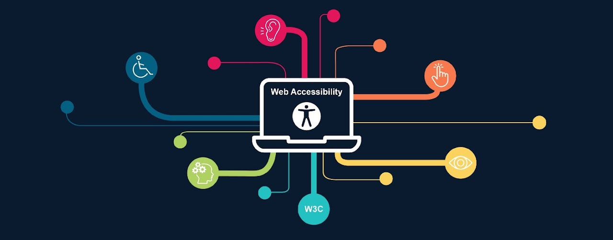

A acessibilidade de um site é importante para que pessoas com algum tipo de deficiência possam ser incluidas de uma melhor maneira na internet. Para demonstrar sua importância, foi criada a cartilha de acessibilidade.
"Acessibilidade na web significa que pessoas com deficiência podem usar a web. Mais especificamente, a acessibilidade na web significa que pessoas com deficiência podem perceber, entender, navegar, interagir e contribuir para a web. E mais. Ela também beneficia outras pessoas, incluindo pessoas idosas com capacidade em mudança devido ao envelhecimento."
Cartilha Acessibilidade da WEB - W3C Brasil
